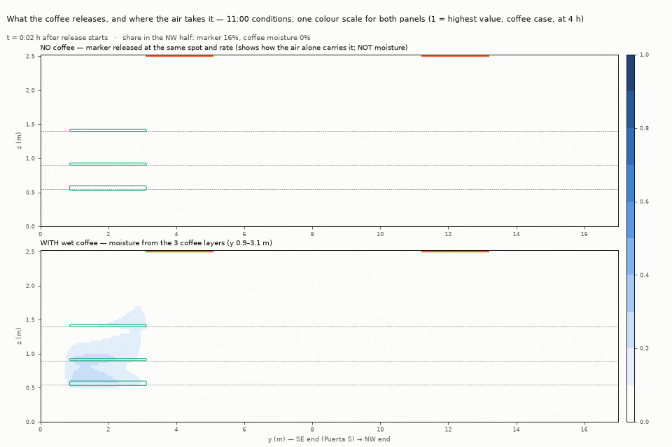
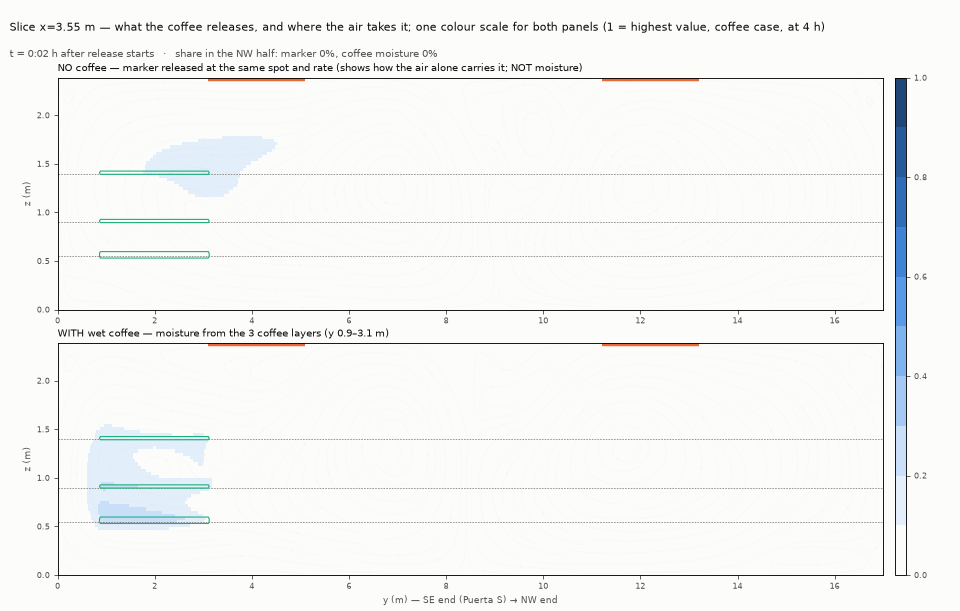
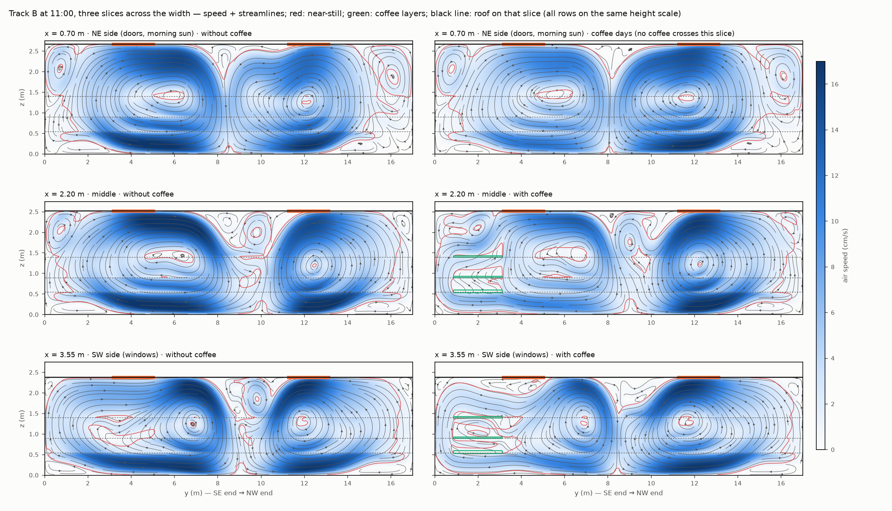
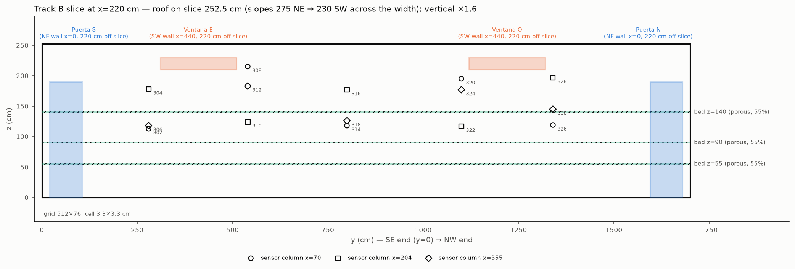
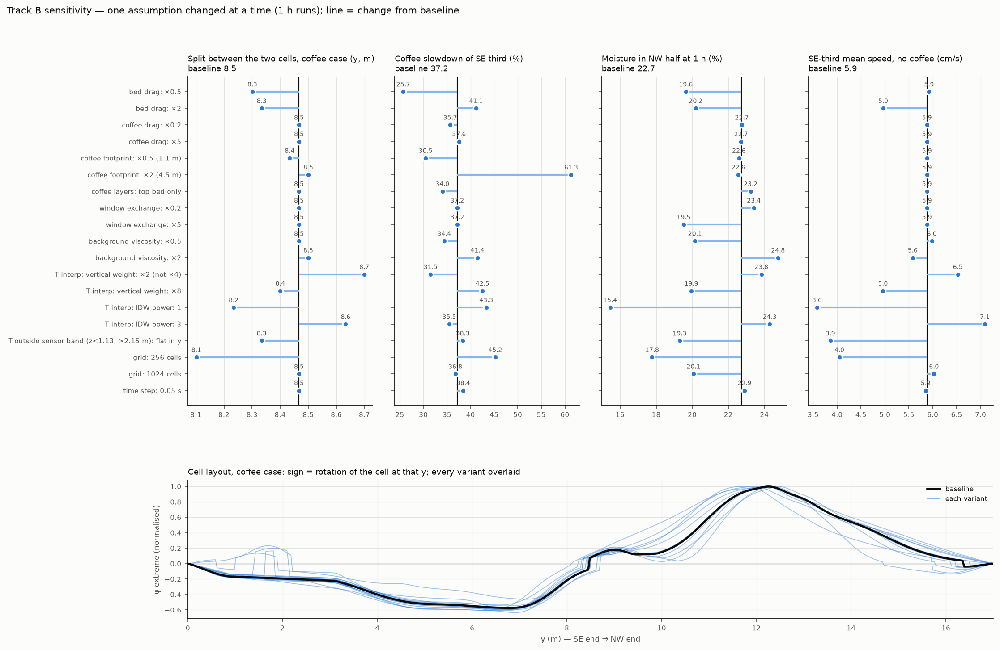
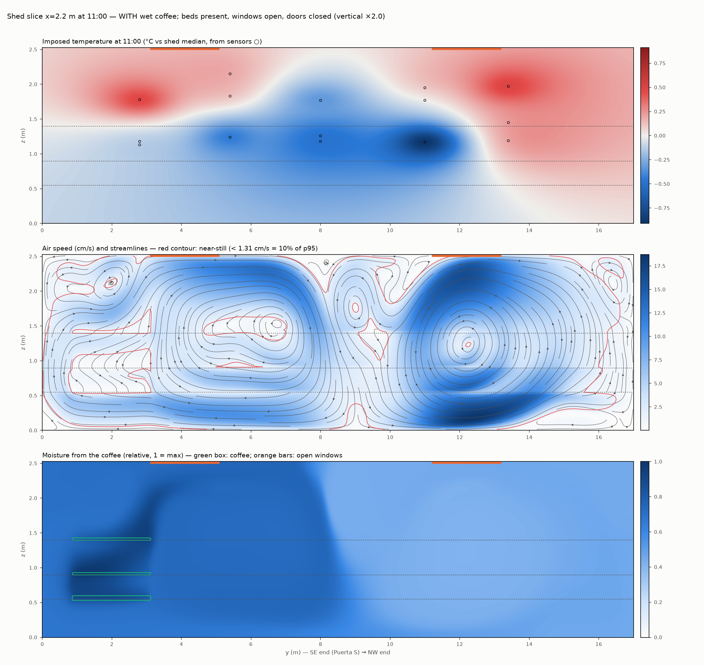
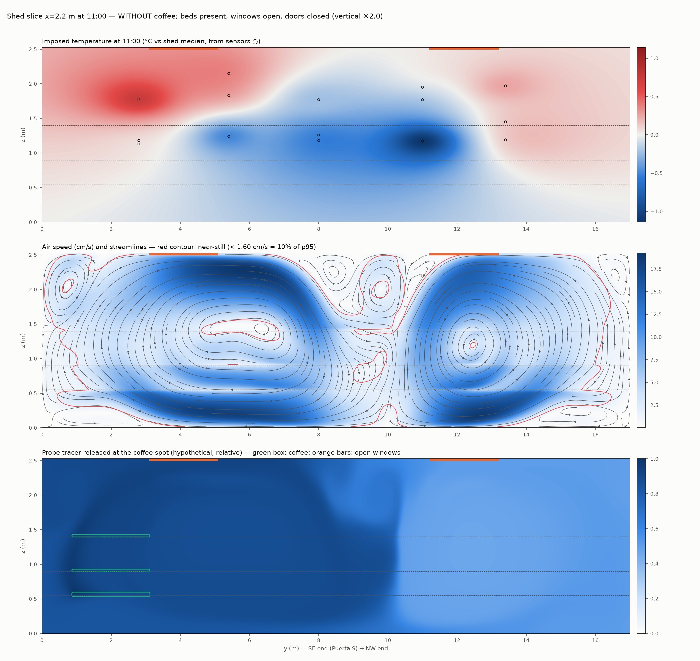
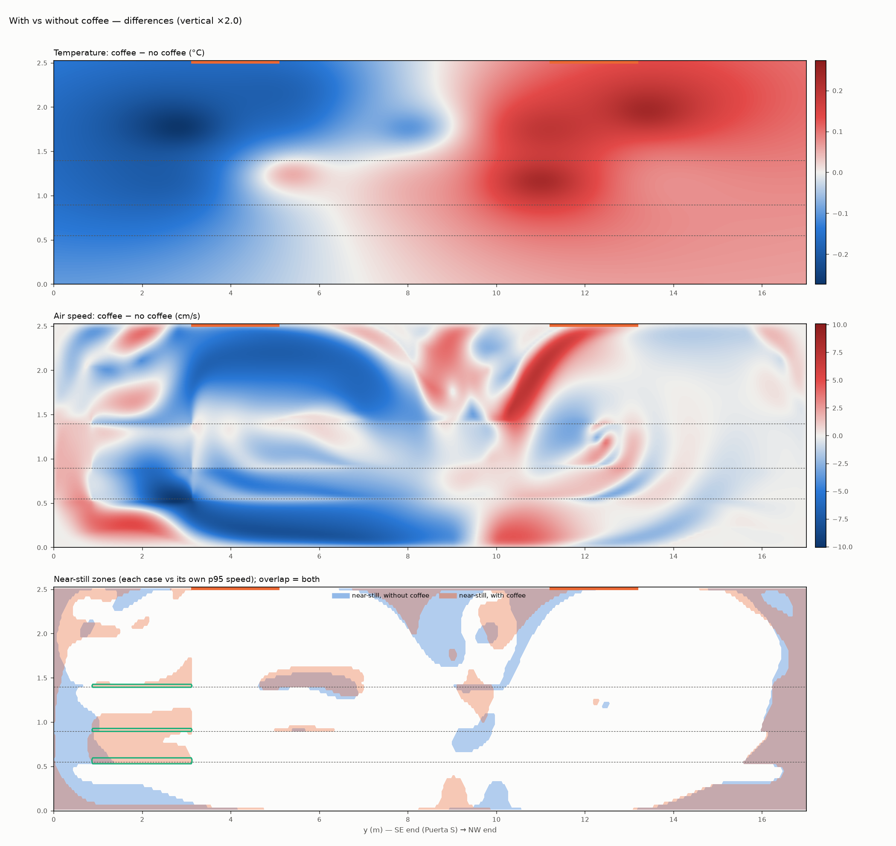

El modelo: el aire gira en dos grandes remolinos
Los sensores dicen qué pasó en 15 puntos. Un modelo por computador ayuda a ver el aire entre ellos: por dónde circula, dónde se queda quieto y a dónde lleva la humedad del café.
Qué es y qué no es este modelo
Simula una rebanada vertical de la nave a lo largo (17 m de largo por la altura), como si se cortara de punta a punta. Se hicieron tres rebanadas: cerca de las puertas, en el centro y cerca de las ventanas.
- Representa las 11 de la mañana, con las ventanas abiertas y las puertas cerradas, sin ventiladores. Lo único que mueve el aire es que el aire caliente sube y el frío baja.
- Las temperaturas no se inventan: se toman de lo que marcan los sensores a esa hora, en días con café y en días sin café.
- Las camas están siempre. El café es una capa sobre las tres camas en el extremo sureste.
Sirve para ver patrones: dónde gira el aire, dónde se queda quieto, hacia dónde va la humedad. No sirve para dar velocidades exactas: pueden estar equivocadas hasta por el doble.
Dos remolinos que dividen la nave
-
Sólido · en el modelo
El aire forma dos grandes remolinos que giran en sentidos opuestos y se dividen a unos 8 a 10 metros del extremo sureste.
Pasa en los tres cortes, con y sin café. El aire fresco baja por el centro de la nave y el caliente sube cerca de los extremos.
-
Sólido · en el modelo
Con café, la división se corre hacia el sureste: el remolino del café se achica.
En el centro pasa de unos 9,7 m a unos 8,5 m.
-
Sólido · en el modelo
Hay zonas de aire casi quieto: junto a las dos paredes de los extremos (sobre todo debajo de la cama baja y en las esquinas de arriba), en el centro del remolino sureste y en la frontera entre los dos remolinos.
Con café, el extremo sureste se frena
-
Sólido · tamaño incierto
En días de café, el aire del tercio sureste (donde está el café) circula como un tercio más despacio. El tercio noroeste no cambia.
Al cambiar los supuestos del modelo el frenado va de 26 % a 61 %, pero siempre aparece.
-
Sólido · en el modelo
Entre las camas cubiertas de café el aire queda atrapado y casi quieto.
Las camas con café funcionan como repisas casi sólidas. La parte de aire casi quieto entre camas, en el tercio sureste, pasa de 12 % a 27 %. Debajo del café, a ras del piso, el aire sí sigue moviéndose.
-
Por confirmar
Si el frenado lo causa el café mismo.
Unas 7 partes de cada 10 del frenado vienen de que, en días de café, el extremo sureste estaba un poco más fresco (unos 0,2 °C arriba); las otras 3, de que el café estorba el paso del aire. Que ese fresco lo cause el café al evaporar agua es posible, pero también pudo ser el clima de esos días. Con estos datos no se puede saber.
A dónde va la humedad del café


-
Sólido · en el modelo
La humedad se acumula entre las camas bajo el café, sale por el borde del café, sube hacia la Ventana E (donde se va una parte) y se reparte por el remolino sureste.
-
Sólido · en el modelo
La frontera entre los remolinos la frena: la mitad noroeste recibe menos humedad y más tarde, pero no está aislada.
A la hora llega cerca de una cuarta parte; con el tiempo, cerca del 40 %. Si se repartiera parejo, sería la mitad.
En la realidad el sol se mueve y las condiciones cambian más rápido que las horas que el modelo necesita para estabilizarse, así que la nave real probablemente queda entre la foto de 1 hora y la de 4 horas.
En todo el ancho, y el rincón más quieto

-
Sólido · en el modelo
Los dos remolinos aparecen en todo el ancho de la nave, no solo en el centro.
El corte del lado de las puertas es el menos estable: con algunos supuestos se forman 3 o 4 remolinos.
-
Sólido · en el modelo
En días de café, el extremo sureste se frena en todo el ancho, y más del lado de las ventanas.
Incluso en el corte de las puertas, donde no hay café, se frena por la temperatura distinta de esos días.
-
Sugestivo · en el modelo
El lugar más quieto y húmedo es el lado de las ventanas en el extremo sureste (zona B), donde estuvo la segunda área de café.
Ahí un tercio del aire entre las camas cubiertas está casi quieto, y la humedad sale más despacio que en el centro. Si el secado es más lento en algún sitio, este es el candidato, y es donde primero se probaría un cambio de ventilador o escotilla.
¿Coincide con lo que midieron los sensores?
Con café húmedo, la humedad subió en casi toda la nave, menos en la línea 5, el extremo de la Ventana O.
La humedad del café se queda sobre todo en el remolino sureste; a la mitad noroeste llega menos y más tarde.
Coinciden Las dos fuentes, trabajadas por separado, apuntan a lo mismo. Es una buena señal, pero no una comprobación: el modelo no se ajustó a los sensores, y los sensores no miden el aire entre ellos.
Qué tan confiable es
Cada supuesto del modelo (qué tanto frenan las camas y el café, cuánto aire cambian las ventanas, cómo se rellenan las temperaturas entre sensores, el tamaño de la grilla) se cambió uno por uno, hacia arriba y hacia abajo: 20 variantes por corte, con y sin café.
| Resultado | Al cambiar los supuestos | Veredicto |
|---|---|---|
| Dos grandes remolinos | 2 remolinos en 36 de 40 corridas | Se sostiene |
| Dónde se dividen, con café | 8,1 a 8,7 m | Se sostiene |
| Dónde se dividen, sin café | 9,3 a 10,6 m | Se sostiene |
| El café corre la división hacia el sureste | 0,9 a 2,3 m, en todas las variantes | Se sostiene |
| Frenado del tercio sureste con café | 26 % a 61 % | Se sostiene tamaño incierto |
| Humedad en la mitad noroeste a la hora | 15 % a 25 % (parejo sería 50 %) | Se sostiene |
| Velocidades en cm/s | 3,6 a 7,1 cm/s | Incierto, hasta ×2 |
Límites que hay que tener presentes
- Es una rebanada, no la nave entera. No hay aire que cruce entre rebanadas, ni sol en las paredes de los lados; las puertas y ventanas entran solo como zonas de intercambio.
- La temperatura está fija. En la realidad el aire movería el calor y debilitaría su propio impulso. Por eso las velocidades probablemente están exageradas; la forma de los remolinos es más confiable.
- No hay sensores debajo de 1,1 m ni encima de 2,2 m. Ahí la temperatura se rellena con la del sensor más cercano, y cerca de un tercio de la fuerza del flujo depende de ese relleno.
- La humedad del modelo es un marcador, no humedad real: no hay evaporación ni humedad relativa. Solo vale el patrón y las proporciones.
Detalle técnico montaje, verificación, mapas completos
| Elemento | Cómo se representa |
|---|---|
| Corte | Plano vertical a x = 2,2 m (más x = 0,70 y 3,55 m), 17 m × 2,525 m (techo plano en ese corte), 512 × 76 celdas de 3,3 cm |
| Temperatura | Fija; interpolada de los promedios de los 15 sensores a las 11:00 (relativos a la mediana). Sin café = días sin café; con café = 25 ago – 7 sep |
| Motor del flujo | Solo flotabilidad (Boussinesq), sin ventiladores |
| Camas | Tres capas porosas delgadas a 0,55 / 0,90 / 1,40 m; frenan más el flujo vertical (2 s⁻¹) que el horizontal (0,5 s⁻¹) |
| Café | Capa de ~2 cm en cada cama, 3,4 m² por cama, y = 0,87–3,13 m; franja porosa densa (50 s⁻¹) que suelta humedad por igual en cada capa |
| Ventanas | Intercambian humedad con el aire de afuera (0,005 s⁻¹, estimación de ventilación por un solo lado). Puertas cerradas |
| Turbulencia | Viscosidad de fondo 2×10⁻⁴ m²/s + modelo de Smagorinsky de AeroJAX |
Verificaciones del solver. Temperatura uniforme → el aire queda quieto. Solo estratificación caliente arriba → sin flujo falso (~10⁻⁹ m/s). Una mitad caliente → una sola celda girando hacia el lado correcto. Masa conservada hasta el redondeo. El flujo se estabiliza en ~5 minutos simulados; la humedad se corre 4 horas. Malla convergida en 512 celdas (1024 cambia las velocidades +2,5 %); a 1024 llega un poco menos humedad al noroeste (20 % contra 23 %), así que la mitad noroeste real probablemente está algo más separada de lo que muestra el modelo.
Por qué se frena. Corridas cruzadas, velocidad media del tercio SE: temperaturas sin café y sin bloque 5,9 cm/s; con el bloque de café 5,2 (−11 %); temperaturas de días de café sin bloque 4,3 (−27 %); ambas 3,7 (−37 %).
Herramientas. Solver 2D propio en JAX; de AeroJAX solo se usa el modelo de turbulencia.




